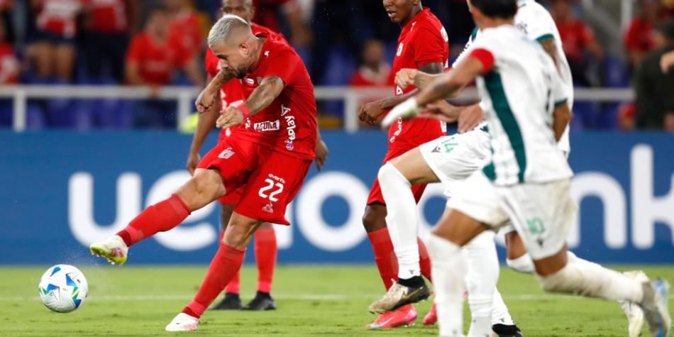
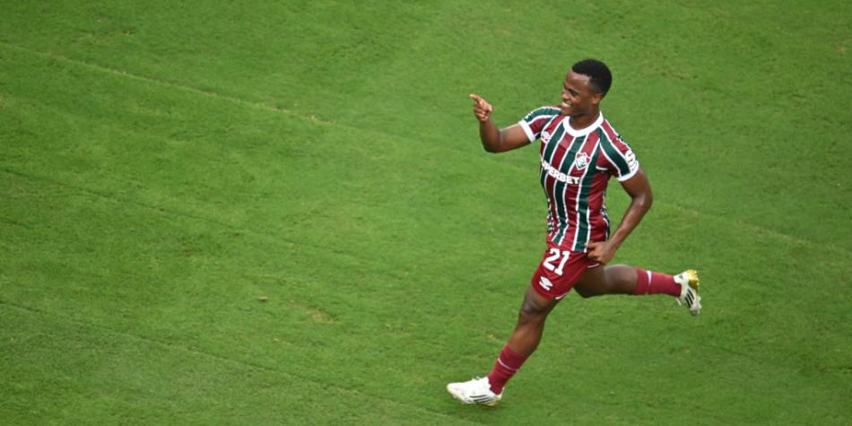

Ya no va más con América: firmó con Pasto y se queda hasta 2026
FUTBOL RED
El defensor Joyce Ossa dejó de pertenecer al América de Cali y seguirá con Deportivo Pasto.

Tras finalizar definitivamente su etapa en América de Cali, Joyce Ossa definió su futuro inmediato.
El defensor central decidió seguir en su casa conocida: Deportivo Pasto.
La institución nariñense hizo oficial la renovación del vínculo a través de sus canales oficiales.
"Joyce Ossa quien culminaba su vínculo contractual con nuestra institución ha renovado y seguirá
defendiendo la sagrada piel con amor y compromiso", publicó el club.
El nuevo contrato de Ossa será por un año y se extenderá hasta junio de 2026.
¿Dirá adiós? Jhon Arias y lo que hará con su futuro tras buen Mundial
FUTBOL RED
El volante colombiano se vio bastante golpeado y ahora analizará lo que viene tras alto rendimiento.

El sueño de Fluminense en el Mundial de Clubes 2025 se acabó al salir derrotado 2-0 por el Chelsea y uno de los más golpeados por este mal resultado
fue el colombiano Jhon Arias, quien hizo un espectacular torneo que lo dejó en boca de todos por su gran aporte ofensivo.
Tras terminado el partido ante los londinenses, Arias salió en medio de las lágrimas, pero también dio su análisis de la eliminación del equipo y luego
se refirió a su futuro inmediato tras su rendimiento personal que lo llevó a tres premios MVP.
El colombiano dejó claro que analizará lo que viene en lo personal con cabeza fría, dejando dudas sobre su continuidad en Fluminense tras este torneo internacional.
"En el momento no pude controlar la frustración que tengo, es un momento muy triste para mí en lo personal, tenía la ilusión de llegar a la final y de poder llevar mi club a la final.
Dentro de lo que cabe hicimos un buen Mundial, me voy tranquilo, contento y esperar a ver qué nos depara la vida, seguir trabajando. Hoy marcará un antes y un después de la historia del
club y de mi historia personal, es sacar las mejores conclusiones, un poquito con cabeza más fría”.